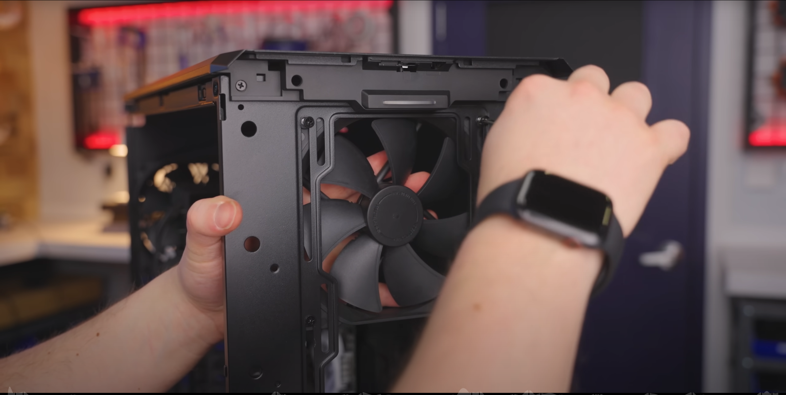

Installing case fans in the case; The manual for the case you bought will specify where to put the fans for optimal air flow, but this is a situation where there is a little room for artistic liberty. Only one fan that pushes cold air through the front of the case is absolutely needed, but two or three fans are ideal. Make sure that cold air is being pulled in the front of the case, circulating through the case and all the parts that get hot, and out the back of the case.
Connect the mother board to the control hub in the case. This is necessary to turn on the computer and open and close the disk drive. Double check that all other connections are secure and neat.


Plug in the monitor and boot the computer for the very first time. Download a copy of the desired operating system to a USB or jump drive. Now in the BIOS system of the computer, select the desired boot drive to launch the Operating System.